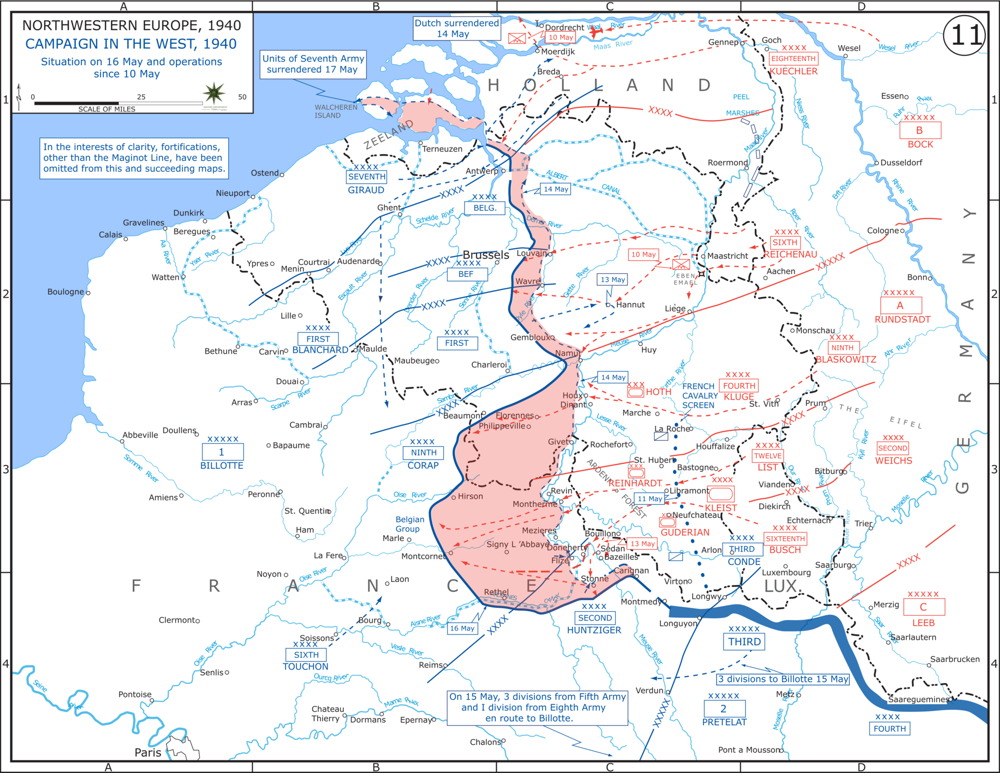

Batalla del Benelux
La invasión simultánea de los Países Bajos, Bélgica y Luxemburgo, con la que Alemania abrió su ofensiva en el oeste el 10 de mayo de 1940.
Datos
| Fechas | 10 de mayo (Luxemburgo, un día) – 15 de mayo (Países Bajos) – 28 de mayo de 1940 (Bélgica) |
|---|---|
| Lugar | Países Bajos, Bélgica y Luxemburgo |
| Resultado | Victoria alemana; ocupación de los tres países |
| Bando invasor | Alemania |
| Defensores | Países Bajos, Bélgica y Luxemburgo, con apoyo de Francia y el Reino Unido |
| Comandantes | Fedor von Bock (Alemania); Henri Winkelman (Países Bajos); rey Leopoldo III (Bélgica) |
| Consecuencia directa | Los aliados avanzan hacia Bélgica, cayendo en la trampa del "corte de hoz" alemán (ver Batalla de Francia) |
Bando invasor
Grupo de Ejércitos B
Defensores y aliados
Apoyo
Apoyo
Introducción
El 10 de mayo de 1940, Alemania invadió los tres países del Benelux, oficialmente neutrales. La operación cumplía dos funciones: conquistar los Países Bajos y Bélgica y, sobre todo, atraer hacia el norte a los mejores ejércitos aliados, que acudirían a defender Bélgica según sus planes, dejándose así rodear por el ataque principal a través de las Ardenas.
Razones
- Maniobra de distracción: era el señuelo del plan Manstein; el Grupo de Ejércitos B debía llamar la atención mientras los blindados cruzaban las Ardenas.
- Rodear la Línea Maginot: atacar por los Países Bajos y Bélgica permitía evitar las fortificaciones francesas.
- Bases y recursos: los puertos y aeródromos de los Países Bajos y Bélgica eran valiosos frente al Reino Unido.
Cuerpo (desarrollo)
Luxemburgo fue ocupado en un solo día, casi sin resistencia. En los Países Bajos, Alemania empleó a gran escala tropas aerotransportadas para tomar puentes y aeródromos. La resistencia neerlandesa se hundió tras el devastador bombardeo de Róterdam del 14 de mayo y la amenaza de bombardear otras ciudades; los Países Bajos capitularon el 15 de mayo.
En Bélgica, tropas alemanas transportadas en planeadores tomaron por sorpresa el fuerte de Eben-Emael, considerado inexpugnable, abriendo el camino. Los ejércitos francés y británico entraron en Bélgica para ayudar, justo como Alemania deseaba. Cuando el "corte de hoz" cerró el cerco por el sur, Bélgica quedó aislada y capituló el 28 de mayo.

Mapa de la primera fase de la ofensiva (Fall Gelb, 10–16 de mayo de 1940), Wikimedia Commons: el ataque a los Países Bajos y Bélgica y la ruptura blindada por las Ardenas. Leyenda original en inglés.
Conclusión
En menos de tres semanas, los tres países quedaron ocupados. La invasión del Benelux fue el gancho perfecto de la campaña de 1940: al lanzarse a defender Bélgica, los aliados facilitaron su propio cerco.
- Los Países Bajos y Bélgica quedaron bajo ocupación alemana durante el resto de la guerra.
- Sus gobiernos y monarcas (salvo Leopoldo III, que se quedó) continuaron la lucha desde el exilio.
- El bombardeo de Róterdam anticipó la guerra aérea contra las ciudades.
Curiosidades
- Eben-Emael en un golpe de mano: apenas 78 paracaidistas alemanes en planeadores neutralizaron uno de los fuertes más modernos de Europa en cuestión de horas.
- El bombardeo de Róterdam: destruyó el centro histórico y precipitó la rendición neerlandesa; se produjo incluso cuando ya había negociaciones en marcha.
- Neutralidad rota: los tres países eran neutrales, como lo había sido Bélgica en 1914, lo que se repetía por segunda vez en una generación.
Teorías
Debates e interpretaciones historiográficas, presentados como tales:
- ¿Fue Bélgica una trampa evitable? Se debate si los aliados debieron avanzar tan a fondo en Bélgica o mantener reservas ante la posibilidad de un ataque por las Ardenas.
- El bombardeo de Róterdam: se discute si fue un error de comunicación (las órdenes de detenerlo no llegaron a tiempo) o un acto deliberado de terror.